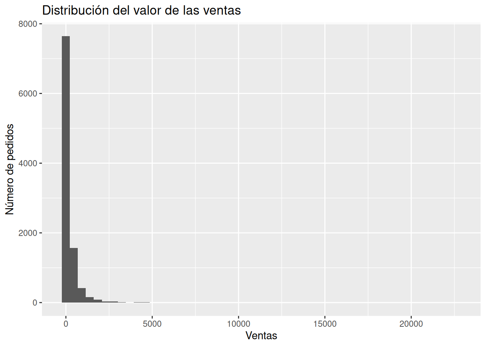
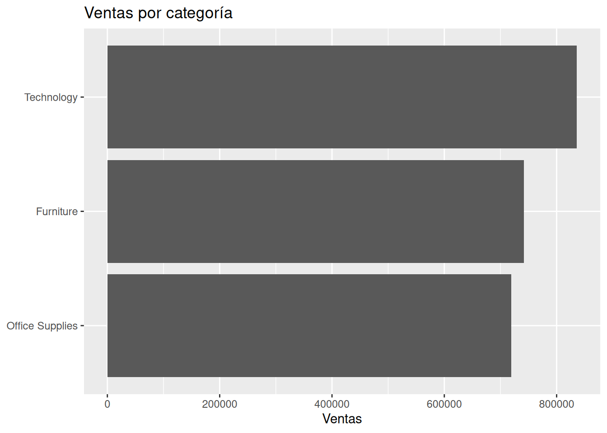
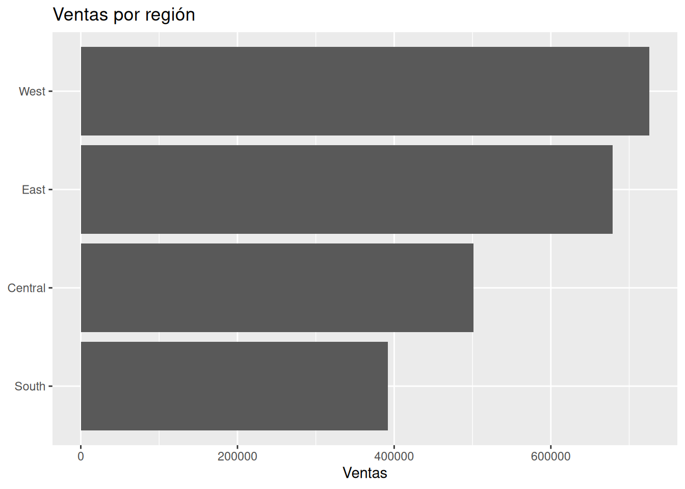

skim(sales)¿Cómo entender un negocio cuando solo tenemos sus datos?
Retail
Visualización
Aprende cómo aproximarte a una empresa utilizando únicamente sus datos, identificando patrones clave antes de construir cualquier modelo analítico.
¿Cómo entender un negocio cuando solo tenemos sus datos?
Cuando pensamos en Business Analytics es común imaginar modelos predictivos, algoritmos sofisticados o técnicas estadísticas avanzadas. Sin embargo, en la práctica, el trabajo de un analista comienza mucho antes.
Lo habitual es recibir una base de datos sin demasiada información adicional. Nadie entrega un manual explicando cómo funciona el negocio, cuáles son sus principales desafíos o dónde existen oportunidades de mejora. La primera tarea consiste en comprender la empresa utilizando únicamente la evidencia disponible.
En este artículo no construiremos ningún modelo bayesiano. Tampoco realizaremos predicciones.
Nuestro objetivo será mucho más sencillo —y, al mismo tiempo, mucho más importante—: aprender a realizar una primera aproximación al negocio utilizando únicamente los datos disponibles.
Trabajaremos con el conjunto de datos Superstore Sales, que contiene 9 994 registros, correspondientes a 5 009 pedidos realizados entre el 3 de enero de 2014 y el 30 de diciembre de 2017. Este conjunto de datos es ampliamente utilizado para enseñar análisis de negocios debido a la variedad de información que contiene sobre ventas, productos, clientes y regiones.
Al finalizar este recorrido deberíamos ser capaces de responder una pregunta fundamental:
¿Qué podemos aprender sobre una empresa antes de construir cualquier modelo?
1. La pregunta de negocio
Imaginemos que una empresa nos contrata para ayudarla a tomar mejores decisiones.
El primer día recibimos únicamente una base de datos con miles de registros de ventas.
No conocemos:
- la estrategia comercial;
- la estructura organizacional;
- los productos más importantes;
- los problemas actuales del negocio.
Todo lo que tenemos son los datos.
Esta situación es mucho más frecuente de lo que parece. En muchos proyectos de consultoría, comprender el negocio constituye una parte importante del trabajo antes de desarrollar cualquier modelo analítico.
Por ello, nuestra primera pregunta será:
¿Qué podemos aprender sobre una empresa únicamente observando sus datos?
Responder esta pregunta permitirá construir posteriormente modelos mucho más útiles, ya que comprenderemos mejor el contexto en el que deberán apoyar la toma de decisiones.
2. Comprendiendo el problema
Antes de abrir R conviene detenernos un momento para pensar qué información podría resultar útil para comprender una empresa.
Un analista normalmente intenta responder preguntas como las siguientes:
- ¿Cómo evoluciona el volumen de ventas?
- ¿Las ventas suelen ser pequeñas o existen pedidos extraordinariamente grandes?
- ¿Qué líneas de negocio parecen generar mayor actividad?
- ¿En qué regiones opera con mayor intensidad la empresa?
Observa que ninguna de estas preguntas requiere todavía construir un modelo estadístico.
Simplemente intentamos transformar una tabla con miles de filas en una historia comprensible sobre el funcionamiento del negocio.
En este artículo utilizaremos principalmente visualizaciones. Los gráficos permiten identificar patrones rápidamente y facilitan la comunicación de los hallazgos con personas que no necesariamente poseen formación técnica.
Nuestro objetivo no será encontrar respuestas definitivas.
Será construir una primera imagen del negocio sobre la cual posteriormente podremos formular preguntas más específicas.
3. Explorando los datos
Preparando el conjunto de datos
Comenzaremos cargando las librerías necesarias e importando el conjunto de datos.
Una buena práctica consiste en inspeccionar primero la estructura general del conjunto de datos antes de comenzar cualquier análisis. Esto podemos hacer con la función skim().
La exploración inicial confirma que trabajaremos con un conjunto de datos limpio, sin valores faltantes y con información correspondiente a cuatro años de operación. Además de variables relacionadas con las ventas, el conjunto incluye información sobre categorías de productos, segmentos de clientes, regiones geográficas, descuentos y ganancias, lo que permitirá profundizar progresivamente en el análisis a lo largo de esta colección.
Aunque todavía no analizaremos todas esas variables, esta primera revisión nos ayuda a conocer el alcance del conjunto de datos y a identificar las preguntas que podremos responder en artículos posteriores.
¿Cómo evolucionan las ventas?
Una de las primeras preguntas que conviene responder es si la actividad comercial parece mantenerse estable o si existen cambios importantes a lo largo del tiempo.
Para ello agregaremos las ventas por mes.

A primera vista, las ventas muestran una tendencia general de crecimiento entre 2014 y 2017. Aunque existen fluctuaciones importantes de un mes a otro, los picos de ventas tienden a ser cada vez mayores conforme transcurre el tiempo.
También se observa un patrón recurrente: los meses finales de cada año concentran algunos de los niveles de ventas más altos, mientras que los primeros meses suelen registrar una menor actividad comercial.
Nuestro objetivo en esta etapa no es estudiar formalmente la tendencia o la estacionalidad, sino reconocer que estos patrones existen y que probablemente merecerán un análisis más profundo cuando abordemos los modelos de pronóstico en una colección posterior.
¿Cómo se distribuyen las ventas?
No todos los pedidos tienen el mismo tamaño.
En muchos negocios unos pocos pedidos representan una proporción importante de las ventas totales.
Antes de calcular promedios conviene observar directamente cómo se distribuyen los valores.

La distribución de las ventas es claramente asimétrica. La gran mayoría de los pedidos corresponde a montos relativamente pequeños, mientras que únicamente un número reducido alcanza valores muy elevados.
Al explorar la distribución con diferentes niveles de zoom observamos que la mayor concentración de pedidos se encuentra por debajo de los 50 dólares y disminuye rápidamente a partir de los 200 dólares. También identificamos unas pocas ventas superiores a los 5 000 dólares, que representan operaciones excepcionales dentro del conjunto de datos.
Este comportamiento es habitual en muchos negocios minoristas. Un pequeño grupo de pedidos de gran valor convive con una gran cantidad de compras mucho más pequeñas. Por ello, limitarse a observar el promedio de las ventas podría ofrecer una imagen incompleta de la realidad.
En los siguientes apartados comenzaremos a responder una nueva pregunta: ¿dónde se concentra la actividad comercial de la empresa?
¿Qué categorías generan mayor actividad?
Una vez que conocemos cómo evolucionan las ventas y cómo se distribuyen los pedidos, el siguiente paso consiste en identificar qué líneas de negocio concentran la mayor parte de la actividad comercial.
En esta etapa todavía no nos interesa responder cuál categoría es más rentable. Esa pregunta será el tema central de un artículo posterior. Por ahora únicamente queremos comprender dónde se generan las ventas.

La categoría Technology registra el mayor volumen de ventas, con aproximadamente 836 mil dólares, seguida por Furniture con 742 mil dólares y Office Supplies con cerca de 719 mil dólares.
Aunque las diferencias no son extremadamente grandes, este gráfico permite identificar rápidamente cuáles son las principales líneas de negocio de la empresa. Esta información resulta útil para priorizar análisis posteriores y comprender dónde se concentra la mayor parte de la actividad comercial.
Sin embargo, conviene evitar una conclusión apresurada: una categoría que vende más no necesariamente es la que genera mayor beneficio. Esa distinción será precisamente el objetivo del siguiente artículo dedicado a la rentabilidad.
¿Dónde opera con mayor intensidad la empresa?
Otra forma de comprender un negocio consiste en observar cómo se distribuyen las ventas entre las distintas regiones donde opera la empresa.

La región West concentra el mayor volumen de ventas, con aproximadamente 725 mil dólares, seguida muy de cerca por East, con cerca de 679 mil dólares. Más atrás aparecen Central, con alrededor de 501 mil dólares, y South, con aproximadamente 392 mil dólares.
Estas diferencias no permiten concluir todavía que una región tenga un mejor desempeño que otra. Para responder esa pregunta necesitaríamos incorporar información sobre ganancias, costos u otros indicadores del negocio.
No obstante, el gráfico sí nos ayuda a identificar dónde parece concentrarse la mayor parte de la actividad comercial y dónde podrían surgir nuevas preguntas de análisis.
4. ¿Por qué todavía no construimos un modelo?
Hasta este momento no hemos utilizado ningún modelo estadístico.
Esta decisión puede parecer sorprendente en un blog dedicado al Business Analytics Bayesiano, pero responde a una idea fundamental: antes de construir un modelo debemos comprender el problema que queremos resolver.
Los modelos ayudan a responder preguntas. Sin embargo, formular buenas preguntas requiere conocer primero el negocio.
Si hubiéramos comenzado directamente con un modelo predictivo, probablemente habríamos obtenido resultados matemáticamente correctos, pero mucho más difíciles de interpretar dentro del contexto empresarial.
La exploración inicial cumple precisamente esa función: construir el contexto necesario para que los modelos posteriores respondan preguntas relevantes y no únicamente ejercicios técnicos.
5. ¿Qué aprendimos sobre el negocio?
Aunque este artículo no incluyó modelos estadísticos, los datos ya permiten construir una primera imagen del funcionamiento de la empresa.
En primer lugar, observamos que las ventas muestran un crecimiento general durante el período analizado, acompañado de fluctuaciones mensuales y de picos de actividad hacia los últimos meses de cada año.
En segundo lugar, comprobamos que la distribución de las ventas está fuertemente concentrada en pedidos pequeños, mientras que un número reducido de operaciones alcanza valores considerablemente mayores. Este patrón sugiere que unas pocas ventas de gran magnitud conviven con una gran cantidad de pedidos de menor importe.
También identificamos que la categoría Technology representa el mayor volumen de ventas, seguida por Furniture y Office Supplies. De forma similar, las regiones West y East concentran una mayor actividad comercial que Central y South.
Sin embargo, estas observaciones constituyen únicamente una primera aproximación al negocio.
Todavía desconocemos aspectos fundamentales como:
- cuáles categorías generan realmente mayor rentabilidad;
- qué indicadores describen mejor el desempeño de la empresa;
- qué factores explican las diferencias observadas entre regiones;
- cómo podrían evolucionar las ventas en el futuro.
Responder estas preguntas requerirá análisis más específicos y, en muchos casos, modelos estadísticos que nos permitan cuantificar la incertidumbre.
6. Recomendaciones para el negocio
Si este análisis formara parte de un proyecto real de consultoría, probablemente no recomendaríamos construir inmediatamente un modelo predictivo.
Antes convendría realizar varias acciones.
La primera sería validar que la calidad de los datos sea consistente con la operación del negocio y confirmar que las variables disponibles reflejan adecuadamente la realidad de la empresa.
La segunda consistiría en identificar los indicadores que realmente utilizará la organización para evaluar su desempeño. Las ventas son importantes, pero rara vez representan el único objetivo de una empresa.
Finalmente, sería recomendable conversar con los responsables del negocio para contrastar las hipótesis que surgieron durante esta exploración inicial. Los datos muestran patrones, pero comprender las causas detrás de esos patrones requiere integrar la evidencia con el conocimiento del contexto empresarial.
En muchos proyectos, esta etapa evita invertir tiempo en modelos sofisticados que terminan respondiendo preguntas poco relevantes para la toma de decisiones.
7. Reflexión bayesiana
Con frecuencia se piensa que el análisis bayesiano comienza cuando escribimos un modelo.
Nuestra experiencia en este artículo sugiere algo diferente.
El pensamiento bayesiano comienza mucho antes, cuando aceptamos que todavía conocemos muy poco sobre el negocio y utilizamos los datos para actualizar gradualmente nuestra comprensión de la realidad.
Cada gráfico que exploramos constituye una nueva pieza de evidencia.
La evolución temporal de las ventas nos ayuda a comprender el comportamiento general de la empresa. La distribución de los pedidos revela la coexistencia de operaciones pequeñas con unas pocas ventas extraordinarias. Las categorías y las regiones muestran dónde parece concentrarse la actividad comercial.
Ninguna de estas observaciones elimina completamente la incertidumbre.
Por el contrario, nos permite formular mejores preguntas para los análisis que vendrán después.
Ese será precisamente el hilo conductor de este blog: utilizar la evidencia disponible para reducir progresivamente la incertidumbre y apoyar decisiones empresariales cada vez mejor fundamentadas.
Apéndice — Código completo
Durante el desarrollo del artículo mantuvimos oculto el código para que la atención del lector se centrara en las preguntas de negocio y en la interpretación de los resultados.
En este apéndice reunimos todo el análisis en el mismo orden en que fue realizado. Los bloques utilizan eval: false para evitar una segunda ejecución durante el renderizado del documento, pero pueden copiarse y ejecutarse fácilmente en un nuevo proyecto.
1. Cargar librerías
library(tidyverse)
library(lubridate)
library(skimr)
library(gt)2. Importar y preparar los datos
sales <- read_csv("data/superstore.csv") |>
mutate(
order_date = mdy(`Order Date`)
)3. Exploración inicial del conjunto de datos
skim(sales)
range(sales$order_date)
n_distinct(sales$`Order ID`)4. Evolución mensual de las ventas
sales_monthly <-
sales |>
mutate(
month = floor_date(order_date, "month")
) |>
group_by(month) |>
summarise(
Sales = sum(Sales),
.groups = "drop"
)
ggplot(
sales_monthly,
aes(month, Sales)
) +
geom_line() +
labs(
title = "Ventas mensuales",
x = NULL,
y = "Ventas"
)5. Distribución del valor de las ventas
ggplot(
sales,
aes(Sales)
) +
geom_histogram(bins = 50) +
labs(
title = "Distribución del valor de las ventas",
x = "Ventas",
y = "Número de pedidos"
)6. Ventas por categoría
sales_category <-
sales |>
group_by(Category) |>
summarise(
Sales = sum(Sales),
.groups = "drop"
)
ggplot(
sales_category,
aes(
reorder(Category, Sales),
Sales
)
) +
geom_col() +
coord_flip() +
labs(
title = "Ventas por categoría",
x = NULL,
y = "Ventas"
)7. Ventas por región
sales_region <-
sales |>
group_by(Region) |>
summarise(
Sales = sum(Sales),
.groups = "drop"
)
ggplot(
sales_region,
aes(
reorder(Region, Sales),
Sales
)
) +
geom_col() +
coord_flip() +
labs(
title = "Ventas por región",
x = NULL,
y = "Ventas"
)Conclusión
Comprender un negocio no comienza construyendo modelos complejos, sino aprendiendo a observar los datos con una actitud crítica y orientada a la toma de decisiones.
En este primer recorrido utilizamos únicamente herramientas de exploración para responder preguntas sencillas pero fundamentales: cómo evolucionan las ventas, cómo se distribuyen los pedidos y dónde parece concentrarse la actividad comercial.
Estas respuestas todavía no explican por qué ocurren los fenómenos observados ni permiten anticipar el futuro. Sin embargo, constituyen el punto de partida sobre el cual construiremos el resto del blog.
En el siguiente artículo cambiaremos ligeramente el enfoque. Dejaremos de preguntarnos qué vemos en los datos para comenzar a discutir qué indicadores describen realmente el desempeño de una empresa y por qué algunas métricas pueden resultar más útiles que otras para apoyar decisiones de negocio.